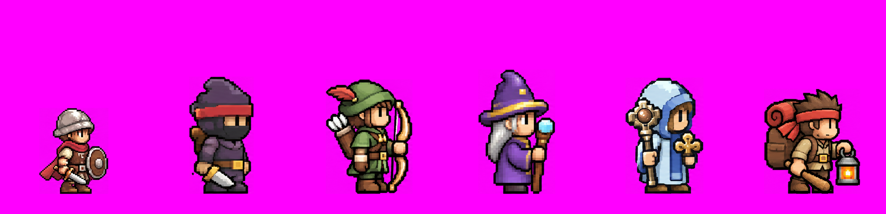
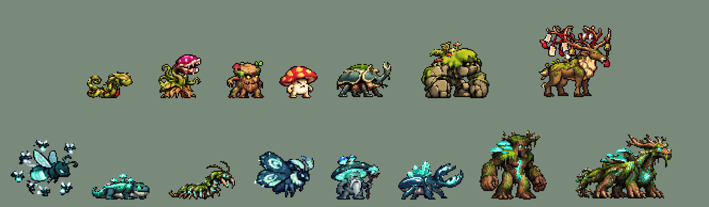

<title>모험가 새 그림</title>
<meta name="claude:viewport-fit-sides" content="cover">
<link rel="stylesheet" href="https://fonts.googleapis.com/css2?family=Do+Hyeon&family=IBM+Plex+Sans+KR:wght@400;600&display=swap">
<style>
/* 배치: 한 줄 흐름 — 머리 → 순서(번호: 실제 차례) → 붙일 그림 셋(그림 · 크게 보기 · 저장) → 부탁 글 넷(글 · 복사) → 받은 뒤 볼 것.
   색은 궁수 그림에서: 두건 초록 · 가죽 갈색 · 버클 금색. 그림은 밝은 회색 판 그대로 보인다 */
:root {
  --bg: #eeedf4; --surface: #f9f8fc; --panel: #dcd9e8; --fg: #1c1a26; --muted: #5a5770; --line: #c8c4d8;
  --accent: #8a2f2a; --accent-fg: #ffffff; --label: #7a5a0c; --sheet: #c8ccd6; --code: #f3f1f9;
  --font-display: "Do Hyeon", "Apple SD Gothic Neo", "Malgun Gothic", "Noto Sans KR", system-ui, sans-serif;
  --font-body: "IBM Plex Sans KR", "Apple SD Gothic Neo", "Malgun Gothic", "Noto Sans KR", system-ui, sans-serif;
  --font-data: ui-monospace, "SFMono-Regular", Menlo, Consolas, monospace;
}
@media (prefers-color-scheme: dark) { :root:not([data-theme="light"]) { --bg: #16151d; --surface: #1f1d29; --panel: #2e2b3c; --fg: #ebe7f2; --muted: #a39fb4; --line: #383548; --accent: #d0564c; --accent-fg: #ffffff; --label: #f0c45a; --sheet: #c8ccd6; --code: #1b1a24; color-scheme: dark } }
:root[data-theme="dark"] { --bg: #16151d; --surface: #1f1d29; --panel: #2e2b3c; --fg: #ebe7f2; --muted: #a39fb4; --line: #383548; --accent: #d0564c; --accent-fg: #ffffff; --label: #f0c45a; --sheet: #c8ccd6; --code: #1b1a24; color-scheme: dark }
*, *::before, *::after { box-sizing: border-box }
body { background: var(--bg); color: var(--fg); font-family: var(--font-body); font-size: 15px; line-height: 1.6; word-break: keep-all; overflow-wrap: break-word; padding-block: 28px 56px; padding-left: max(16px, env(safe-area-inset-left, 0px)); padding-right: max(16px, env(safe-area-inset-right, 0px)) }
.wrap { max-width: 820px; margin-inline: auto; display: grid; gap: 44px; grid-template-columns: minmax(0, 1fr) }
h1, h2, h3, p, ul, ol, figure, pre { margin: 0 }
ul, ol { padding: 0; list-style: none }
h1, h2 { font-family: var(--font-display); font-weight: 400; text-wrap: balance; line-height: 1.15 }
h1 { font-size: clamp(30px, 7vw, 42px) }
h2 { font-size: 24px }
h3 { font-size: 16px; font-weight: 600 }
.top { display: grid; gap: 10px }
.eyebrow { color: var(--label); font-size: 13px; font-weight: 600; letter-spacing: .04em }
.lede { max-width: 36em }
.sec { display: grid; gap: 18px; grid-template-columns: minmax(0, 1fr) }
.note { color: var(--muted); font-size: 14px; max-width: 44em }
.steps { counter-reset: n; display: grid; gap: 12px; max-width: 46em }
.steps li { counter-increment: n; padding-left: 34px; position: relative }
.steps li::before { content: counter(n); position: absolute; left: 0; top: 1px; width: 24px; height: 24px; display: grid; place-items: center; font: 400 15px/1 var(--font-display); background: var(--accent); color: var(--accent-fg); border-radius: 4px }
.item { display: grid; gap: 10px; grid-template-columns: minmax(0, 1fr) }
.item .what { display: grid; gap: 2px }
.row { display: flex; flex-wrap: wrap; gap: 8px; align-items: center }
.msg { color: var(--muted); font-size: 13px }
.msg:empty { display: none }
.btn { font: 600 14px/1 var(--font-body); padding: 11px 14px; border-radius: 6px; border: 1px solid var(--line); background: var(--surface); color: var(--fg); cursor: pointer }
.btn[aria-pressed="true"] { background: var(--fg); border-color: var(--fg); color: var(--bg) }
.btn.go { background: var(--accent); border-color: var(--accent); color: var(--accent-fg) }
.btn:disabled { opacity: .6; cursor: default }
.btn:focus-visible { outline: 2px solid var(--label); outline-offset: 2px }
.frame { overflow-x: auto; background: var(--sheet); border: 1px solid var(--line); border-radius: 8px }
.frame img { display: block; width: 100%; height: auto; image-rendering: pixelated }
.frame.zoomed img { width: var(--zw); max-width: none }
.frame.soft img { image-rendering: auto }
.attach { color: var(--label); font-size: 13px; font-weight: 600 }
.req { font: 13.5px/1.65 var(--font-body); white-space: pre-wrap; background: var(--code); border: 1px solid var(--line); border-radius: 8px; padding: 14px 16px; max-height: 22em; overflow: auto; -webkit-user-select: text; user-select: text }
.list { display: grid; gap: 10px; max-width: 46em }
.list li { padding-left: 18px; position: relative }
.list li::before { content: ""; position: absolute; left: 2px; top: .62em; width: 6px; height: 6px; background: var(--label) }

.mock { position: relative; width: 100%; aspect-ratio: 2172 / 724; container-type: inline-size; border: 2px solid #000; overflow: hidden; border-radius: 6px; background: #c9d6c2; }
.mock .b { position: absolute; left: 0; right: 0; display: flex; align-items: center; justify-content: center; text-align: center; font-size: 2.9cqw; line-height: 1.25; color: #f2f4e8; box-sizing: border-box; border-top: 1px dashed rgba(0, 0, 0, .45); padding: 0 1cqw; }
.pts { margin: 0; padding-left: 1.2em; display: grid; gap: 4px; }
</style>
<main class="wrap">
  <header class="top"><p class="eyebrow">미궁도시 라비린토스 · 모험가</p><h1>모험가 여섯 명 새 그림 부탁</h1><p class="lede">모험가를 몬스터만큼의 품질로 다시 받기 위한 부탁 글과 붙일 그림 두 장입니다. 받은 그림은 영상 도구에 올릴 기준 그림으로 씁니다.</p></header>
  <section class="sec"><div class="what item"><h2>순서</h2></div>
    <ol class="steps"><li>아래 그림 ① ②를 저장해 GPT에 붙이고 「부탁 글 1」을 보냅니다. 여섯 명이 한 장에 나옵니다.</li><li>마음에 들면 그 그림을 저에게 보내 주세요. 여섯 명의 생김새가 정해집니다.</li><li>영상으로 움직임을 뽑을 캐릭터는 「부탁 글 2」로 한 명씩 크게 받습니다. 먼저 한 명만 해 봅니다.</li><li>크게 받은 한 장을 영상 도구에 올리고 「영상 글」을 붙여 걷기 영상을 만듭니다. 받은 영상 파일을 저에게 보내 주세요.</li></ol>
  </section>
  <section class="sec"><div class="what item"><h2>GPT에 붙일 그림 2장</h2><p class="note">①은 누가 누구인지의 기준, ②는 품질의 기준입니다. 두 장을 같이 붙여야 「이 사람들을 이 품질로」가 전해집니다.</p><p class="note" id="save-hint">저장 단추가 보이지 않으면 그림을 길게 눌러 저장해 주세요.</p></div>
    <div class="item"><div class="what"><h3>① 지금 모험가 여섯 명</h3><p class="note">왼쪽부터 전사 · 도적 · 궁수 · 마법사 · 사제 · 짐꾼. 옷과 색, 든 물건만 따릅니다.</p></div><div class="frame" id="f-a"></div><div class="row"><button class="btn" type="button" data-zoom="f-a" aria-pressed="false">크게 보기</button><button class="btn go" type="button" data-save="ref_adv_now.png" hidden>저장</button><span class="msg" role="status"></span></div></div>
    <div class="item"><div class="what"><h3>② 지금 몬스터들</h3><p class="note">원시림과 깊은 숲의 몬스터. 묘사 밀도 · 명암 · 색감의 기준.</p></div><div class="frame" id="f-b"></div><div class="row"><button class="btn" type="button" data-zoom="f-b" aria-pressed="false">크게 보기</button><button class="btn go" type="button" data-save="ref_mon_quality.png" hidden>저장</button><span class="msg" role="status"></span></div></div>
  </section>
  <section class="sec"><div class="what item"><h2>부탁 글</h2></div>
    <div class="item"><div class="what"><h3>부탁 글 1 — 여섯 명 한 장</h3><p class="attach">붙일 그림: ① 지금 모험가 여섯 명 + ② 지금 몬스터들</p><p class=note>비율은 3.5등신으로 적었습니다. 더 작고 귀엽게(3등신) 또는 더 길쭉하게(4등신) 원하시면 글의 그 숫자만 바꾸면 됩니다.</p></div><pre class="req" id="req-1" tabindex="0">모험가 여섯 명 새 그림 — 한 장에 여섯 명 (가로 3칸 × 세로 2줄)

붙인 그림 두 장:
① 지금 게임의 모험가 여섯 명 (왼쪽부터 전사 · 도적 · 궁수 · 마법사 · 사제 · 짐꾼) — 누가 누구인지, 옷 · 색 · 든 물건의 기준. 그림체와 비율은 따르지 않습니다.
② 같은 게임의 몬스터들 — 그림의 품질 · 묘사 밀도 · 명암 · 외곽선 · 색감의 기준. 새 모험가는 이 몬스터들과 한 화면에 섰을 때 같은 게임으로 보여야 합니다.

①의 여섯 명을 ②의 품질로 새로 그려 주세요.

공통
· 도트 그림(픽셀 아트). ②처럼 칸이 또렷하고, 면마다 명암이 세 단계 이상, 재질(쇠 · 가죽 · 천 · 나무)이 구분되게
· 여섯 명 모두 같은 그림체 · 같은 비율 · 같은 외곽선 굵기. 키는 머리 셋 반쯤(3.5등신) — ①처럼 머리만 큰 2등신이 아니라 팔다리가 제대로 보이는 몸
· 얼굴: 점 눈이 아니라 눈 · 눈썹 · 코 · 입이 보이는 얼굴. 여섯 명이 서로 다른 사람으로 보이게
· 모두 오른쪽을 보고 선 옆모습에 가까운 모습(몸을 살짝 이쪽으로 튼 3/4 옆모습). 두 발로 편하게 서서 무기를 든 기본 자세. 두 팔 · 두 다리 · 두 발이 다 보이게
· 여섯 명의 발밑 높이를 칸 안에서 같게, 키도 같게 (짐꾼만 등짐 때문에 조금 넓어도 됨)

한 명씩 (윗줄 왼쪽부터 전사 · 도적 · 궁수 / 아랫줄 왼쪽부터 마법사 · 사제 · 짐꾼)
1. 전사 — 둥근 쇠 투구, 붉은 목도리, 가죽 덧댄 쇠 갑옷. 오른손에 한손검, 왼팔에 둥근 방패
2. 도적 — 짙은 보랏빛 두건과 복면, 붉은 머리띠, 어두운 가죽옷. 한 손에 단검
3. 궁수 — 붉은 깃 꽂은 초록 두건, 초록 가죽옷, 등에 화살통. 손에 긴 활
4. 마법사 — 금빛 띠를 두른 보라색 뾰족 모자와 보라색 로브, 긴 흰 수염의 노인. 푸른 구슬이 달린 나무 지팡이
5. 사제 — 하늘빛 두건 달린 긴 옷(푸른 계열 — 흰 옷으로 그리지 않는다), 금빛 둥근 머리 장식이 달린 긴 지팡이, 다른 손은 비워 둔다. 십자 · 더하기 모양 · 머리 위 빛 고리는 그리지 않는다
6. 짐꾼 — 붉은 머리띠를 맨 갈색 머리 청년, 베이지색 작업복, 등에 말아 올린 붉은 담요가 얹힌 큰 등짐, 한 손에 등불, 다른 손에 짧은 나무 몽둥이

규격
· 가로 3칸 × 세로 2줄, 여섯 칸. 가로 : 세로 = 3 : 2 (예: 1536 × 1024). 칸마다 한 명, 칸 가운데에, 머리 위와 발밑에 여백
· 바탕은 단색 자홍 #FF00FF. 바닥 · 그림자 · 빛 · 효과 없이
· 글자 · 번호 · 이름표 없이. 캐릭터끼리 닿지 않게, 칸 밖으로 나가지 않게
· 다른 작품의 캐릭터를 닮지 않게</pre><div class="row"><button class="btn go" type="button" data-copy="req-1">글 복사</button><span class="msg" role="status"></span></div></div>
    <div class="item"><div class="what"><h3>부탁 글 2 — 한 명 크게 (영상용)</h3><p class="attach">붙일 그림: 부탁 글 1로 받은 여섯 명 그림</p><p class=note>괄호 안에 직업 이름 하나만 남기고 보냅니다.</p></div><pre class="req" id="req-2" tabindex="0">모험가 한 명 크게 — 영상용 기준 그림

붙인 그림: 방금 받은 여섯 명 그림.
이 가운데 「(전사 / 도적 / 궁수 / 마법사 / 사제 / 짐꾼 중 하나를 적는다)」 한 명만, 똑같은 생김새 · 옷 · 색 · 그림체로 한 장에 크게 그려 주세요.

· 오른쪽을 보고 선 3/4 옆모습, 두 발로 편하게 선 기본 자세, 무기를 든 채
· 머리끝부터 발끝까지 몸 전체가 그림 안에, 그림 높이의 70%쯤을 차지하게, 가운데에
· 정사각형 (예: 1024 × 1024)
· 바탕은 단색 자홍 #FF00FF. 바닥 · 그림자 · 빛 · 효과 · 글자 없이
· 도트 그림 그대로 — 칸이 또렷하게</pre><div class="row"><button class="btn go" type="button" data-copy="req-2">글 복사</button><span class="msg" role="status"></span></div></div>
    <div class="item"><div class="what"><h3>영상 글 — 제자리 걷기</h3><p class="attach">올릴 그림: 부탁 글 2로 받은 한 장</p><p class=note>영상 모델은 영어 글을 더 잘 따라서 영어로 적었습니다. 해상도는 낮은 쪽(768P)이면 충분합니다.</p></div><pre class="req" id="req-3" tabindex="0">(영상 도구에 넣을 글 — 기준 그림 한 장을 올리고 이 글을 붙인다)

Use the uploaded pixel-art character exactly as it is. Side view, the character walks in place facing right, a steady walk cycle: legs alternate, arms swing naturally, the body bobs slightly, clothes and held items follow the motion. The character stays in the center of the frame and does not move across the screen.
Fixed camera, no zoom, no pan, no camera shake. Keep the solid magenta (#FF00FF) background completely flat and unchanged, no ground, no shadow, no particles, no light effects, no text.
Keep the same pixel-art style, proportions, face, outfit and colors in every frame. The whole body stays inside the frame from head to feet. The last frame matches the first frame so the walk loops.
Duration 4 to 5 seconds.</pre><div class="row"><button class="btn go" type="button" data-copy="req-3">글 복사</button><span class="msg" role="status"></span></div></div>
  </section>
  <section class="sec"><div class="what item"><h2>받은 뒤 볼 것</h2></div>
    <ul class="list"><li>여섯 명이 한 줄로 섰을 때 키와 머리 크기가 같은지.</li><li>②의 몬스터 옆에 두었을 때 같은 게임 그림으로 보이는지 — 모험가만 납작하거나 만화 같으면 다시 받습니다.</li><li>사제에 십자 모양이나 머리 위 빛 고리가 들어가지 않았는지.</li><li>두 손과 두 발이 다 보이는지 — 가려진 팔다리는 영상에서 이상하게 생겨납니다.</li><li>바탕이 한 가지 자홍색인지, 그림자나 바닥이 없는지.</li></ul>
  </section>
</main>
<script>
const $$ = s => Array.from(document.querySelectorAll(s));
const msgOf = b => b.parentElement.querySelector('.msg');
const W = { 'f-a': 2640, 'f-b': 3320 };
$$('[data-zoom]').forEach(b => { const f = document.getElementById(b.dataset.zoom); f.style.setProperty('--zw', W[b.dataset.zoom] + 'px');
  b.addEventListener('click', () => { const on = f.classList.toggle('zoomed'); b.setAttribute('aria-pressed', on ? 'true' : 'false'); }); });
// 글 복사: 안 되면 글을 골라 둔다
$$('[data-copy]').forEach(b => b.addEventListener('click', async () => {
  const pre = document.getElementById(b.dataset.copy), msg = msgOf(b);
  try { await navigator.clipboard.writeText(pre.textContent); msg.textContent = '복사했습니다.'; }
  catch (_) { const r = document.createRange(); r.selectNodeContents(pre); const s = window.getSelection(); s.removeAllRanges(); s.addRange(r); pre.focus(); msg.textContent = '여기서는 바로 복사가 안 됩니다. 글을 골라 두었으니 길게 눌러 복사해 주세요.'; }
}));
// 저장 (보는 쪽에서 저장을 받아 줄 때만 단추를 보인다)
(async () => {
  let dl = null;
  try { dl = window.claude && window.claude.use ? await window.claude.use('downloads') : null; } catch (_) { dl = null; }
  if (!dl) return;
  document.getElementById('save-hint').hidden = true;
  $$('[data-save]').forEach(b => { b.hidden = false; b.addEventListener('click', async () => {
    const msg = msgOf(b); b.disabled = true; msg.textContent = '';
    try { const blob = await (await fetch(b.dataset.save)).blob(); await dl.save({ filename: b.dataset.save, data: blob }); msg.textContent = '저장했습니다.'; }
    catch (e) { const c = e && e.code; msg.textContent = c === 'declined' ? '저장을 취소했습니다.' : c === 'rate_limited' ? '잠시 뒤에 다시 눌러 주세요.' : '여기서는 저장할 수 없습니다. 그림을 길게 눌러 저장해 주세요.'; }
    b.disabled = false; }); });
})();
</script>